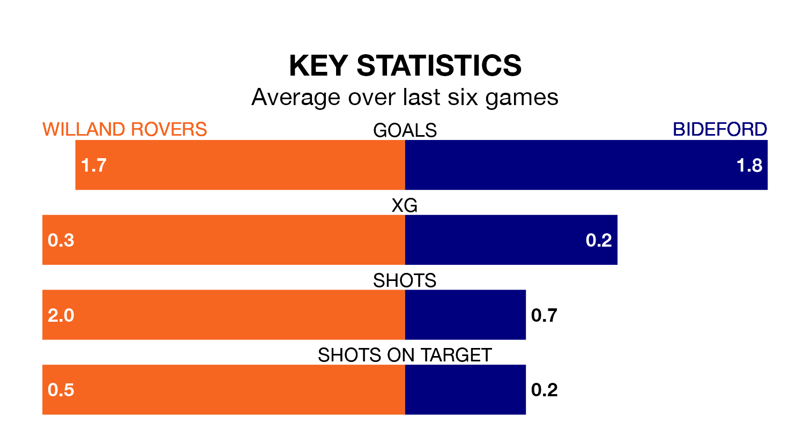

Bideford travel for Saturday's match against Willand Rovers looking to bounce back from defeat last time out in the Southern League Division One South.
Bideford, who sit fourth in the league after 20 games, fell to a 2-0 away defeat to Bemerton Heath Harleq. on January 30.
They face a Willand side who secured a draw in their last match, a 2-2 tie with Yate Town, and who sit eighth in the table.
In the last 10 years, Willand and Bideford have played each other on six occasions. They won three each.
On average, Willand scored 1.7 goals and Bideford 1.2 in those matches.
Their last meeting was on November 4, when Willand won 2-0 away.
With 39 goals in 23 games so far this season, Willand are scoring at the league's average rate with 1.7 goals per game. But they are conceding at an average rate too, letting in 38 goals at a rate of 1.7 per game.
Bideford, meanwhile, are below average scorers, with 1.6 goals per game. They have conceded 1.4 goals per game.
Rovers are in mixed form in the Southern League Division One South, with two wins and two draws from their last six games.
With four wins and a draw over that period, the away side's form is better – they have taken 13 points from 18, compared to the hosts' eight.
Updated: 11:43 (UTC), 08/02/24